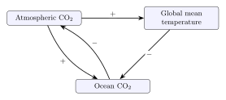
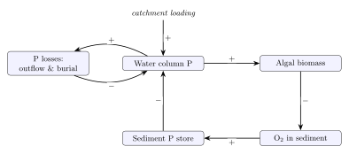

import Pkg
Pkg.activate(@__DIR__)
Pkg.instantiate()HW 2 Solutions
Overview
Load Environment
The following code loads the environment and makes sure all needed packages are installed. This should be at the start of most Julia scripts.
using Plots
using LaTeXStringsProblems (Total: 50 Points)
Problem 1 (9)
Problem 1.1 (3)
Denoting \(dx/dt = f(x)\), \[f(x) = 0 \implies x = \pm 2.\]
At \(x=2\), \(df/dx = 8x = 16 > 0\), so this equilibrium is unstable. At \(x=-2\), \(df/dx=-16 < 0\), so this equilibrium is stable.
Problem 1.2 (3)
Denoting \(dx/dt = f(x)\), \[f(x) = 0 \implies x = 0, \pm 1.\]
At \(x=0\), \(df/dx = 1-3x^2 = 1 > 0\), so this equilibrium is unstable. At \(x=\pm 1\), \(df/dx=-2 < 0\), so these equilibria are stable.
Problem 1.3 (3)
Denoting \(dx/dt = f(x)\), \[f(x) = 0 \implies \cos x = \frac{1}{2} \implies x = \pm \frac{\pi}{3} + 2\pi n.\]
In this case, \(df/dx = 2\sin x\), so we can ignore the \(2 \pi n\) when we do the calculations, as these will not change the stability of the relevant points. If you don’t recall the formula for \(\sin\left(\pm \frac{\pi}{3}\right)\), observe from the Pythagorean Theorem that \(\sin x = \pm \sqrt{1 - \cos^2 x}\), with the sign depending on which quadrant the angle \(x\) is in.
Starting with \(x = \frac{\pi}{3} + 2\pi n\), using the formula above, \(2 \sin(\pi/3) = \sqrt{3} \approx 1.73\) (positive since \(\pi/3\) is in the first quadrant, so has both a positive \(\sin\) and \(\cos\)). So \(x = \frac{\pi}{3} + 2 \pi n\) is unstable.
Similarly, for \(x = -\frac{\pi}{3} + 2 \pi n\), \(2 \sin(-\pi/3) = -\sqrt{3} \approx 1.73\) (negative since \(-\pi/3\) is in the fourth quadrant, so has a negative \(\sin\)). So \(x =-\frac{\pi}{3} + 2 \pi n\) is stable.
Problem 2 (9)
Problem 2.1 (5)
The systems diagram should look like this:

- The positive connection between atmospheric CO2 concentrations and global temperatures is just capturing the greenhouse effect: CO2 blocks the transmission of radiation along certain frequencies which would normally cause a loss of energy back to space.
- The negative connection between global temperatures and ocean CO2 concentrations is a result of Henry’s law for the solubility of CO2. While the oceans are not an ideal mixture and the atmospheres and oceans aren’t in equilibrium (so one would be cautious in using Henry’s law to make specific predictions about concentrations), the key insight is the temperature dependence of Henry’s constant, where increasing temperature decreases solubility.
- The negative connection from ocean to atmospheric CO2 concentrations is the result of the mass balance of CO2: CO2 taken up by the oceans must come from the atmosphere.
- The positive connection from atmospheric to ocean CO~2 concentrations is not simply a matter of mass balance: higher atmospheric partial pressure results in increased dissolution in the oceans. This is slightly tricky: if this were just a matter of mass balance, the feedback between ocean and atmospheric CO2 would be self-amplifying, which is impossible.
The overall feedback between global temperature, ocean CO2, and atmospheric CO2 is therefore amplifying: increases in temperature decrease the concentration of CO2 in oceans, which increase the atmospheric concentration, causing further temperature increases.
Problem 2.2 (4)
- This is a stock as it is a total absorbed mass. If it were the amount absorbed per year (or per unit of atmospheric CO2, etc), it would be a flow.
- This is a flow, as it is a rate.
- This is a flow as it is an increase per year, rather than the actual measured temperature or total anomaly (which would be a stock).
- This is a stock as it is a total amount of heat.
Problem 3 (6)
To find the equilibria, start by denoting \(\frac{dH}{dt} = f(H, L)\) and \(\frac{dL}{dt} = g(H, L).\) We want to solve the system \(f(H, L) = 0\) and \(g(H, L) = 0\). These are the equations
\[\begin{aligned} b_h H_t - m_h H_t L_t - \gamma_h H_t^2 &= 0 \\ b_l L_t H_t - m_l L_t - \gamma_l L_t^2 &= 0. \end{aligned}\]
We can factor out \(H_t\) from the first equation and \(L_t\) from the second, giving
\[\begin{aligned} H_t(b_h - m_h L_t - \gamma_h H_t) &= 0 \label{eq:prey} \\ L_t(b_l H_t - m_l - \gamma_l L_t) &= 0. \label{eq:pred} \end{aligned}\]
Thus we have four possible cases to check. The simpliest is \(H_t=L_t=0\): this is the extinction equilibrium. Call this solution \(E_0\).
If \(H_t = 0\) but \(L_t \neq 0\), then Equation \(\eqref{eq:pred}\) simplifies to \[-\gamma_l L_t = m_l \implies L_t = -\frac{m_l}{\gamma_l}.\] But this is impossible, as \(L_t\) cannot be negative. This also makes sense: the predator population cannot be nonzero without any prey.
If \(L_t = 0\) but \(H_t \neq 0\), then Equation \(\eqref{eq:prey}\) simplifies to \[\gamma_h H_t = b_h \implies H_t = \frac{b_h}{\gamma_h}.\] This is the population the prey will stabilize at without predation, where the birth rate and the self-death rate balance. Note that this equilibrium does not exist for the Lotka-Volterra model, because without the self-death term the prey population will increase infinitely in the absence of predators. Call this solution \(E_1\).
The last case is the most complex, where \(H_t \neq 0\) and \(L_t \neq 0\). First, solve the relevant part of Equation \(\eqref{eq:pred}\) for \(L_t\): \[L_t = \frac{b_l H_t - m_l}{\gamma_l}. \label{eq:pred2}\] Substituting this into Equation \(\eqref{eq:prey}\): \[\begin{aligned} \gamma_h H_t + m_h \frac{b_l H_t - m_l}{\gamma_l} &= b_h \\ \gamma_h \gamma_l H_t + m_h \left(b_l H_t - m_l\right) &= b_h \gamma_l \\ H_t \left(\gamma_h \gamma_l + m_h b_l) &= b_h \gamma_l + m_l m_h \\ H_t &= \frac{b_h \gamma_l + m_l m_h}{\gamma_h \gamma_l + m_h b_l}. \label{eq:preysolve} \end{aligned}\] And plugging into Equation \(\eqref{eq:pred2}\) and simplifying gives: \[\begin{aligned} L_t &= \frac{b_l\left(b_h \gamma_l + m_l m_h\right) - m_l\left(\gamma_h \gamma_l + m_h b_l\right)}{\gamma_l\left(\gamma_h \gamma_l + m_h b_l\right)} \\ &= \frac{b_l b_h - m_l \gamma_h}{\gamma_h \gamma_l + m_h b_l}. \label{eq:predsolve} \end{aligned}\]
Denote these solutions by \(H^*\) and \(L^*\), respectively, and this entire solution by \(E_2\). To answer the question of stability, we want to calculate the eigenvalues of the Jacobian (we will drop the \(t\) as these solutions are equilibria and are therefore independent of time), \[\begin{aligned} J &= \begin{pmatrix}\frac{\partial f}{\partial H} & \frac{\partial f}{\partial L} \\ \frac{\partial g}{\partial H} & \frac{\partial g}{\partial L} \end{pmatrix} \\ &= \begin{pmatrix}b_h - m_h L - 2 \gamma_h H & -m_h H \\ b_l L & b_l H - m_l - 2 \gamma_l L \end{pmatrix}. \end{aligned}\] These eigenvalues are the solution to the characteristic equation \[\det(J - \lambda I) = 0.\] If at a given equilibrium \(E_i\) both eigenvalues (since this is a 2d system, and \(J\) is a 2x2 matrix) have negative real part, \(E_i\) is stable. If any eigenvalues have a positive real part, \(E_i\) is unstable. And if the eigenvalues are purely imaginary, the solutions will oscillate around \(E_i\) and the system is degenerate (or marginally stable).
Extra Credit:
You didn’t have to analyze \(E_0\), but note that \[J|_{E_0} = \begin{pmatrix} b_h & 0 \\ 0 & -m_l \end{pmatrix}.\] Since all of the parameters of this model have to be positive, this means the eigenvalues are \(b_h > 0\) and \(-m_l < 0\), so the solution is unstable (introducing any hares will cause the population to increase away from zero, even though introducing only lynxes will result in them dying out again). In fact, this is an example of a saddle point, which you might recall from multivariable calculus as a type of critical point.
For \(E_1\), the Jacobian becomes \[J|_{E_0} = \begin{pmatrix} -b_h & \frac{-m_h b_h}{\gamma_h} \\ 0 & -\frac{b_l b_h \gamma_h} - m_l \end{pmatrix}.\] As this is a triangular matrix, the eigenvalues are the diagonal entries. The first is \(-b_h < 0\). The second is \(\frac{b_l b_h \gamma_h} - m_l\), which can be positive or negative. The condition for it to be negative (and hence for \(E_1\) to be stable) is \[\frac{b_h}{\gamma_h} < \frac{m_l}{b_l},\] and it is unstable otherwise. Notice that this condition is intuitive: the equilibrium where there are no lynx but there are hares is stable if the mortality rate of lynxes is greater than the birth rate of hares, as the lynx will die off without enough hare population growth to sustain them.
\(E_2\) is the most involved case. As both \(H^*\) and \(L^*\) have the same denominator, let’s simplify notation by writing \(H^* = P/\Delta\) and \(L^* = Q/Delta\). In other words, \[ P = b_h\gamma_l + m_h m_L, \qquad Q = b_h b_L - \gamma_h m_L, \qquad \Delta = \gamma_h\gamma_l + m_h b_L. \] Observe that \(P > 0\) and \(\Delta > 0\), but \(Q\) may not be positive; we will need this later.
Start by computing the upper-left term \(J_{11}\): \[\begin{aligned} J_{11} &= b_h - m_h L^* - 2\gamma_h H^* \\ &= b_h - m_h\frac{Q}{\Delta} - 2\gamma_h\frac{P}{\Delta}, \end{aligned}\] or
\[ J_{11} = \frac{b_h(\gamma_h\gamma_l + m_h b_L) - m_h(b_h b_L - \gamma_h m_L) - 2\gamma_h(b_h\gamma_l + m_h m_L)}{\Delta}. \] Expanding the numerator and collecting terms leaves us with \[\begin{aligned} J_{11} &= \frac{-b_h\gamma_h\gamma_l - \gamma_h m_h m_L}{\Delta} \\ &= \frac{-\gamma_h \left(b_h\gamma_l + m_h m_L\right)}{\Delta} \\ &= -\frac{\gamma_h P}{\Delta} = -\gamma_h H^* \end{aligned}\] A similar calculation gives that the bottom-left term \(J_{22}\) is \[J_{22} = -\frac{\gamma_l Q}{\Delta} = -\gamma_l L^*.\] The off diagonal terms are easier: \[\begin{aligned} J_{12} &= -m_h H^* = \frac{-m_h P}{\Delta} \\ J_{21} &= b_l L^* = \frac{b_l Q }{\Delta}. \end{aligned}\]
Thus \[J_{E_2} = \frac{1}{\Delta} \begin{pmatrix} -\gamma_h P & -m_h P \\[4pt] b_l Q & -\gamma_l Q \end{pmatrix} = \begin{pmatrix} -\gamma_h H^* & -m_h H^* \\[4pt] b_l L^* & -\gamma_l L^* \end{pmatrix}. \]
Now we need to find the eigenvalues. The characteristic polynomial is \[\begin{aligned} 0 &= \det(J^* - \lambda I) \\ &= \det \begin{pmatrix} -\gamma_h H^* - \lambda & -m_h H^* \\[4pt] b_L L^* & -\gamma_l L^* - \lambda \end{pmatrix} \\ &= \left(-\gamma_h H^* - \lambda\right)\left(-\gamma_l L^* - \lambda\right) - \left(-m_h H^*\right)\left(b_L L^*\right). \end{aligned}\]
This simplifies to \[\lambda^2 + \left(\gamma_h H^* + \gamma_l L^*\right)\lambda + \left(\gamma_h\gamma_l + m_h b_L\right)H^*L^* = 0.\]
To simplify notation for the stability conditions, introduce new notation: \[T = \left(\gamma_h H^* + \gamma_l L^*\right), \qquad D = \Delta\,H^*L^* = \Delta\cdot\frac{P}{\Delta}\cdot\frac{Q}{\Delta} = \frac{PQ}{\Delta}.\]
This makes the characteristic polynomial \(\lambda^2 + T\lambda + D = 0\), and so the roots are \[\lambda = \frac{-T \pm \sqrt{T^2 - 4D}}{2}.\] Observe that \(T > 0\) and \(D > 0\).
Now, we have to check all cases of the sign of the discriminant. First, if \(T^2 = 4D\), when the eigenvalues are just \(-T < 0\), so \(E_2\) is stable.
If \(T^2 - 4D > 0\), one root \[\lambda_- = \frac{-T - \sqrt{T^2 - 4D}}{2} < 0\] as the numerator is one negative number subtracted from another. For \(\lambda_+\), note that \(T^2 - 4D < T^2\), so \[\sqrt{T^2 - 4D} < \sqrt{T^2} = T.\] So \[\lambda_+ = \frac{-T + \sqrt{T^2 - 4D}}{2} < \frac{-T + T}{2} = 0,\] and both eigenvalues are still negative, and \(E_2\) is stable.
Finally, consider when \(T^2 - 4D < 0\). Then we can rewrite \(\sqrt{T^2 - 4D} = i \sqrt{4D - T^2}\), and \[\lambda_{\pm} = \frac{-T \pm i\sqrt{4D - T^2}}{2}\] with real part \(-\frac{T}{2} < 0\), and once again \(E_2\) is stable.
Problem 4 (26)
Problem 4.1 (4)
One way we could draw this diagram is

Yours might look slightly different, but we can conclude that this is an amplifying feedback loop due to the negative connections between algal biomass and oxygen stored in the sediment (due to the oxygen demand caused by decomposition of dead biomass) and between the P stored in the sediment and P stored in the lake water (due to uptake or recycling; this is mass-balance of P).
Problem 4.2 (3)
- This is a flow, as this is the rate at which oxygen will be removed due to decomposition.
- This is a stock, as it is a quantity of P mass.
- This is a flow, as it is the amount of P added to the lake in a given year, therefore it is a change in the P mass.
Problem 4.3 (5)
Notice that we have two feedbacks in this model: through permanent removal of \(P\), with gain \(g_\text{out}\), and through sediment recycling (with gain \(g_\text{sed}\)). \(g_\text{out}\) is captured by the term \(\alpha_\text{out}(P) = -sP\), and so \[g_\text{out} = \partial \alpha_\text{out}/\partial P = -s = -1.\] As \(R(P)\) is only non-constant for \(P\) between 25 and 35 \(\mu\text{g} /\text{L}\), \(g_\text{sed}\) is only non-zero in this range, and has a value of 2. This the total gain \(g = g_\text{out} + g_\text{sed}\) is \(-1\) when P is below 25 or above 35 \(\mu\text{g} / \text{L}\) and 1 otherwise. So in the first two cases, this is a dampening feedback (P increases are decreased through outflow) and in the last, amplifying (P increases lead to increased soil sedimentation and recycling, outweighing the outflow).
This means that the total effect of an addition of \(1\ \mu\text{g} / \text{L}\) P will be reduced by half in the high-P and low-P regimes (using the formula from class, $ = $ when \(|g| < 1\)). In the middle regime, it is more complicated because \(g=1\) and so the infinite series we used to derive that formula does not converge. As a result, the system will start to runaway until it hits the upper limit of the sedimentation feedback, where it will stabilize as the sediment recycling plateaus.
Problem 4.4 (6)
Setting the model to zero at \(L = 20\ \mu\text{g}/(\text{L}\cdot\text{yr})\) gives
\[20 - P + R(P) = 0.\]
We need to solve this equation for each regime and check that the solutions are consistent with the assumptions for each regime.
First, if \(P < 25\), then \(R = 0\), so \[\begin{aligned} 20 - P &= 0 \\ P_1 &= 20\ \mu\text{g}/\text{L} \end{aligned}\] As \(20 < 25\), this is a valid solution. In this case, the derivative of the model is \(-1\), so \(P_1\) is a stable equilibrium, which aligns with our understanding of the feedback mechanism: a small amount of increased phosphorous is removed from the system faster than it is reintroduced from the external loading, while a small amount of removed phosphorous will analogously be added back.
If \(25 < P < 35\), \(R(P) = 2(P-25)\), so \[\begin{aligned} 20 - P + 2(P - 25) &= 0 \\ P - 30 &= 0 \\ P_2 &= 30\ \mu\text{g}/\text{L}. \end{aligned}\] \(25 < 30 < 35\), so this is a valid solution. The derivative in this case is \(1\), so this is an unstable equilibrium. Again, this makes sense: an increased amount of P causes an increase in recycling which outpaces the outflow, so the concentration of P in the lake will increase accordingly, and this feedback will continue until the recycled P stabilizes. Similarly, a decreased amount of P will result in less recycling, at a rate lower than the reduction in outflow.
Finally, if \(P < 35\), \(R = 20\), so \[\begin{aligned} 20 - P + 20 &= 0 \\ P_3 &= 40\ \mu\text{g}/\text{L} \end{aligned}\] \(40 > 35\), so this is again a valid solution. The stability is the same as in the first case, as the derivative is \(-1\), so \(P_3\) is stable.
Problem 4.5 (8)
Solution
In each P concentration regime, the associated equilibria are: \[\begin{aligned} P_1 &= L \\ P_2 &= 50 - L \\ P_3 &= L + 20. \end{aligned}\] and each is an equilibrium only if it lands inside the case that produced it.
For example, when \(L = 10\), \(P_2 = 40\) and \(P_3 = 30\), neither of which are consistent with the relevant case assumptions. The only surviving equilibrium is \(P_1 = 10\ \mu\text{g}/\text{L}\) and it is stable as the model’s derivative is \(-1\). There is not enough loading to cause the lake’s P concentration to enter a sediment-recycling regime, as the outflow always stabilizes the concentration.
When \(L=30\), similarly the only surviving value is \(P_3 = 50\ \mu\text{g}/\text{L}\), and it is again stable, as the amount of recycling outweighs outflow (so the lake cannot return to an oligotrophic state), but any additional P will leave the system as the amount of recycling is saturated.
References
List any external references consulted, including classmates.